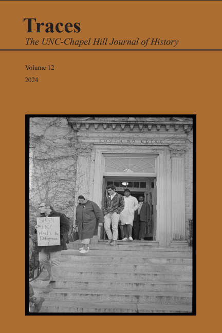

Writing

My most recent published work is my paper: Battleground Santiago: The Significance of Conflicting Ideologies within the Estadio Nacional in Chile, published in the 2024 edition of Traces, the UNC Chapel Hill Journal of History. This paper looks at the confluence of sports and politics through 20th Century Chile, from the National Stadium's construction, through the dictatorship of Augusto Pinochet, and into the modern day. The journal can be found here